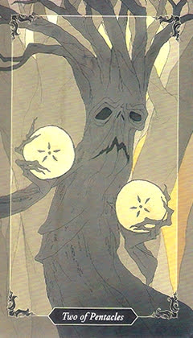

2 пентаклів
Пряме значення
принятие решений, которые часто оказываются удачными. Предоставление возможностей. Деление и эволюция. Берите то, что вам предлагают. Сорвите фрукт с дерева жизни. Это ваш шанс. Ухватитесь за возмож ность и поработайте над ней. Скажите «да».
Перевернуте значення
двойственность - это благословение и проклятие. Совершенно естественно видеть темное и светлое, хорошее и плохое, дни и ночи. Старайтесь везде создавать пространство для промежуточных состояний. Помните: ваших знаний недостаточно, поэтому хорошо подумайте, прежде чем судить о комто или о чем-то.
Відносини / кохання
Здоров'я
Кар'єра / Бізнес
Карта дня
Порада
Так / Ні
